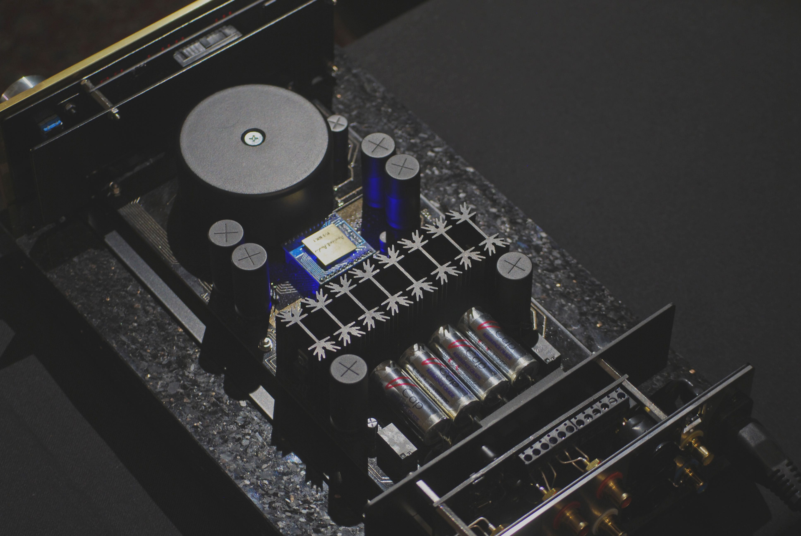
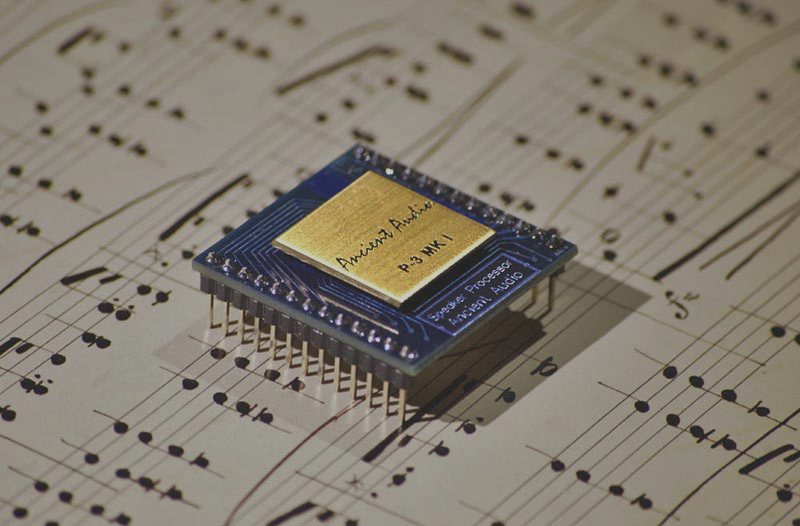

P-3
Ancient Audio with its 20 years’ experience in music systems construction solved this problem in their own unique way. They began with their own physical and mathematical model of a loudspeaker which describes a given loudspeaker’s imperfections and provides, by means of calculating algorithms, an appropriate and unique corrective signal for each loudspeaker individually. In order to achieve it in real time it was necessary to create propriety Digital Speaker Processor chip. Since his chip works in digital domain it can be used directly in a digital track like it is in a CD player between the CD transport and D/A converter.
From the point of view of an end user, the best solution is to have a separate device coupled with an analogue section, as we do with a classic pre-amplifier. That is P-3: Digital Signal Processor and an Pre-Amplifier in one. It accepts both RCA and XLR connectors. The processor changes analogue signals through the A/D converter into digital ones and corrects them by means of DSP. Digitally corrected data are then changed back into analogue ones through A/D converter and a sophisticated output stage. All these parts are modeled after these of famous Lektor Grand & Lektor Air. The output section has an identical build but makes use of FET transistors which in consequence provides an unchangeable sound throughout its operation. P-3 can considerably improve the sound of each and single hi-end system. The P-3 DSP processor influences: - The sound dynamics -The musical separation of instruments - Musical instruments positioning on a stage -Space & recording venue acoustics - Bass control - The micro-detail reproduction Loudspeaker differ widely in many respects. Hence the correction parameters for different models must be different. P-3 processor can memorize up to as many as 250 loudspeakers models. The present database comprises the pre-set modes for the following models: Dynaudio, Sonus Faber, Avantgarde, Wilson Audio, Spendor, Raidho. Since there is a wide variety of different makes of loudspeakers, we can fully adapt our D-3 processor to your system to make the most and the best of it. The whole procedure of adaptation to a particular system lasts for about a few hours and can be carried out in any place in European Community. Please feel free to contact us in order to book a visit at your convenience
